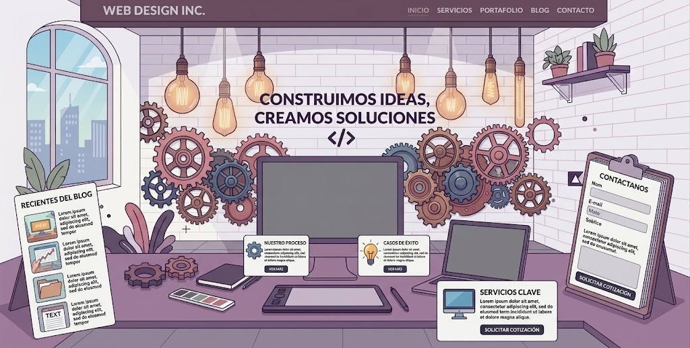
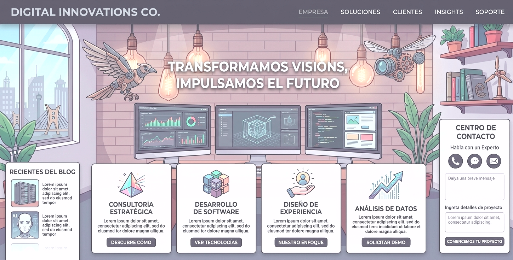
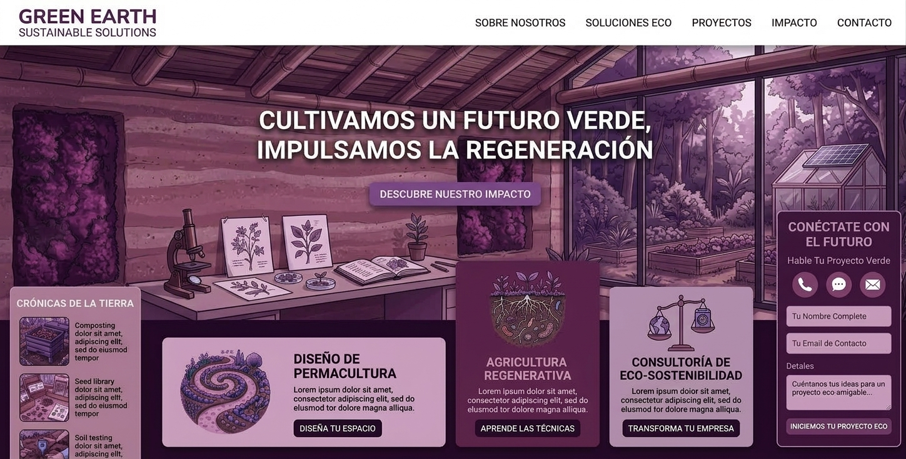

Diseño web
Sitios distintivos y fáciles de usar, diseñados alrededor de tu historia y tus clientes.
Estudio digital independiente
Creamos sitios web claros y con personalidad para que empresas con ambición encuentren su lugar en internet.
Empecemos un proyectoEstrategia, diseño y desarrollo en un proceso pensado con cuidado.
 Más claridad. Mucha más personalidad.
Más claridad. Mucha más personalidad.
01 Diseño con intención
02 Hecho para personas
03 Aguascalientes, México
Lo que hacemos
Desde la primera conversación hasta el último detalle, hacemos que lo digital sea más sencillo.
Sitios distintivos y fáciles de usar, diseñados alrededor de tu historia y tus clientes.
Experiencias de compra sencillas para que las personas descubran y elijan tus productos.
Una combinación cuidada de color, tipografía e imágenes para reconocer tu marca.
Algunos proyectos
Ideas distintas convertidas en experiencias digitales útiles y memorables.




Un buen proceso importa
Los buenos resultados nacen de buenas conversaciones. Te mantenemos al tanto y participas en cada etapa.
Conocemos tus objetivos, tu audiencia y cómo se vería un buen resultado.
Organizamos el contenido y definimos un diseño adecuado para tu negocio.
Integramos todo, revisamos los detalles y preparamos tu sitio para salir al mundo.
¿Tienes una idea?
Cuéntanos un poco sobre tu proyecto. Te responderemos en un día hábil.
alfonsomanuelsosaortiz10@gmail.com